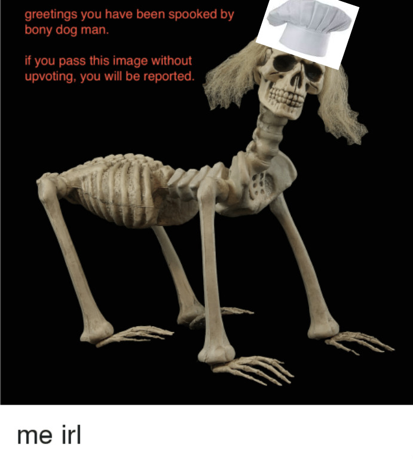

The owner, manager and entertainer of the restaurant. This fine skeltal is an esteemed trumpet player in his home town but he can play many instruments, including the xylophone.
He made this café to spread good calcium and tidings of Mr. Skeltal, lord of all things that are 2Spooky. The song that he will play with his band while you are enjoying your meal is playable beside the picture.
The Chef
The Bony Dog Man is the man behind these great meals, but be warned if you pass by this restaurant without updooting you will be reported.
He is a master at creating works of arts with calcium rich foods. He graduated from culinary school and has worked here ever since.

The Server
The server may look like a chair... because that is exactly what he is. Nicknamed the skeleton of uncomfotableness, because he can make people forever uncomfortable in thier computer chair,
this worker being paid minimum wage will make you feel very awkward when he is taking your order. You might say this is a bad thing but at least he is being real with you unlike most servers.
The Restaurant
The resaurant owns most of the set pieces from the Halloween song, Spooky Scary Skeletons. This makes the restaurant look like a graveyard
so you are fully immersed in the Calcium themed restaurant. The gravestones are a little uncomfortable to sit on but that is because of the Skeleton of Uncomfortableness wishes it to base